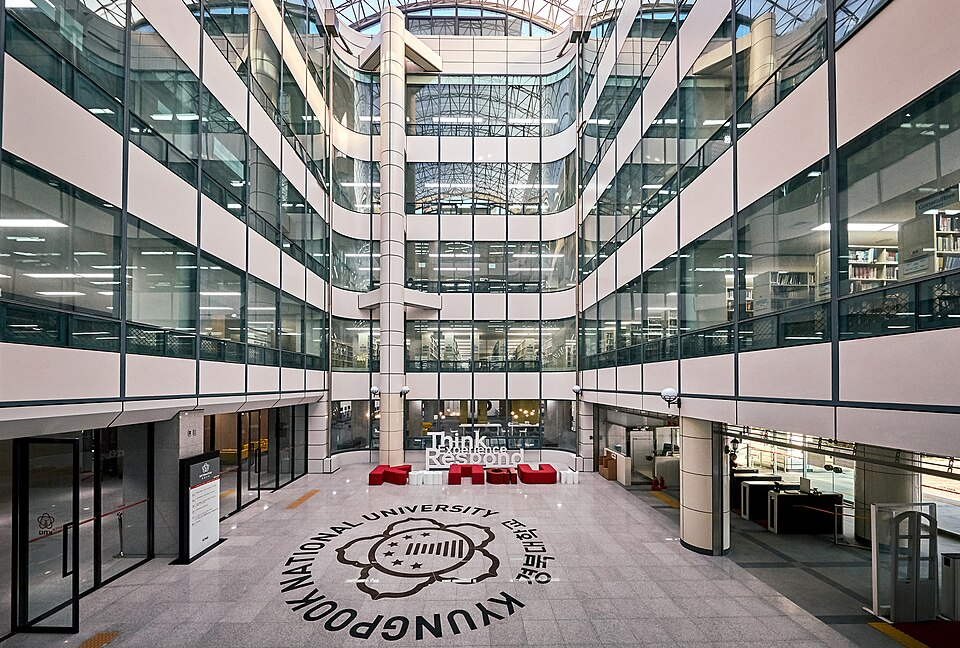

경북대학교의 정시 반영표는 구조가 단순합니다. 그래서 오히려 결론이 분명합니다. 한 과목에 37.5%가 걸려 있고, 계열을 정하는 순간 그 37.5%가 국어에서 수학으로 옮겨 갑니다. 나머지 세 과목은 25·25·12.5로 고정입니다. 이 글은 그 표를 그래서 어느 과목을 먼저로 바꿔 읽습니다. 고3 수학과외에 시간을 얼마나 줄지 정하는 기준이 됩니다.
| 계열 | 국어 | 수학 | 영어 | 탐구 |
|---|---|---|---|---|
| 인문계열 | 37.5% | 25% | 12.5% | 25% |
| 자연계열 | 25% | 37.5% | 12.5% | 25% |
탐구는 두 과목을 반영합니다. 위 두 줄은 일반적인 인문·자연 모집단위 기준이고, 단과대학에 따라 반영 영역 자체가 다른 유형을 쓰는 곳이 따로 있습니다. 지망 학과가 어느 유형에 들어가는지는 요강에서 직접 확인해야 합니다.
네 과목 중 하나가 37.5%입니다. 나머지 셋을 합쳐도 62.5%이니, 1순위 과목 하나가 전체의 3분의 1을 넘게 끌고 갑니다. 인문계열이면 국어, 자연계열이면 수학입니다.
여기서 흔한 오해가 하나 있습니다. “국어가 37.5%니까 국어만 하면 되겠다”는 계산입니다. 실제로는 반대입니다. 37.5%짜리 과목은 이미 잘해야 하는 과목이고, 등급이 웬만큼 나오는 상태에서 더 올리기는 가장 어렵습니다. 반면 25%짜리 두 과목(수학·탐구 또는 국어·탐구)은 합치면 50%로 1순위보다 큽니다. 점수를 올릴 여지가 남은 쪽은 대개 여기입니다.
탐구는 두 과목을 반영하므로 한 과목당 12.5%입니다. 영어 한 과목(12.5%)과 탐구 한 과목의 무게가 같다는 뜻입니다. 탐구를 11월에 몰아서 끝내려는 계획이 왜 위험한지가 여기서 나옵니다. 탐구 두 과목을 합치면 25%로, 인문계열의 수학이나 자연계열의 국어와 같은 무게입니다.
탐구 과목 선택에 가산을 두는지는 모집단위와 학년도에 따라 달라질 수 있는 항목이라 여기에 숫자를 적지 않았습니다. 다만 방향은 분명합니다. 두 과목 모두 백분위가 잘 나오는 조합을 고르는 편이, 한 과목에 몰아서 잘 보는 것보다 유리한 구조입니다.
영어가 12.5%면 네 영역 중 가장 낮습니다. 그래서 영어를 뒤로 미루는 학생이 많습니다. 그런데 경북대학교는 영어를 원점수나 백분위가 아니라 등급별 환산점수로 반영합니다. 등급이 한 칸 내려가면 그만큼이 한 번에 빠집니다. 등급 사이의 점수 차는 자료마다 다르게 정리돼 있어 여기에 숫자를 적지 않았습니다.
현실적인 기준은 이렇습니다. 지금 영어 등급이 목표보다 한 칸 아래라면 그건 12.5%가 아니라 실점입니다. 반대로 이미 목표 등급이면 영어에 더 쓰는 시간은 0%로 돌아옵니다. 12.5%라는 숫자는 “영어를 하지 마라”가 아니라 “영어에서 더 벌 생각은 하지 마라”로 읽는 편이 맞습니다.
학생 수준에 맞는 선생님을 24시간 안에 추천해 드려요. 상담은 무료입니다.